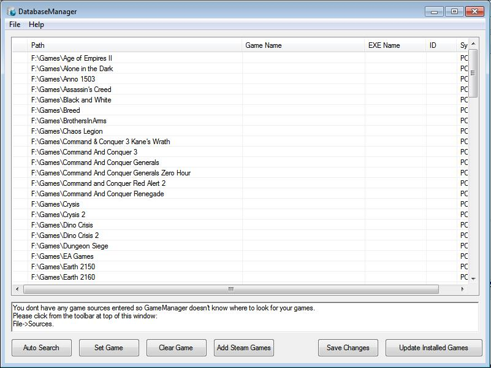
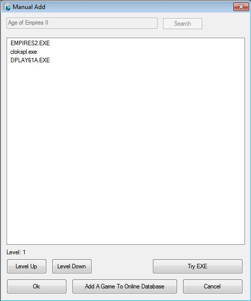

Interface
When opened you will be presented with the below window:
Help
tips are shown in the bottom box when you hover over certain items
within the interface. If your stuck reading the help box will solve
most problems.
Adding Sources
Before you can
add your games to GameManager you must add the location of where your
games are installed. This can be achieved by clicking File ->
Sources from the top menu.
When you click this you will be greeted
with this window
To add sources use the Add Source box at the bottom left of window, Select the platform you want to select the games for from the drop down box then.
For PC:
To add all the
folders within a folder use the 'Add Contents of Folder' button
To
add a single folder click 'Add Single Folder/File'
For All other platforms:
To add all the
files within a folder use the 'Add Contents of Folder' button
To
add a single file click 'Add Single Folder/File'
Each choice will
be added to the list above the buttons.
Selecting a source from
the list and clicking 'Delete Source' will remove it from the list.
Click 'Done' when you have added the locations of all your games.
Adding Games to Database
You should now have a window similar to below:

You now have two choices:
Use the 'Auto Search' Button which gets the program to make educated guesses as to what game the folder/file is.
Set the games manually
To set games manually click on the folder from the list and then click 'Set Game' (Note: Double clicking game in list does the same). You should then be greeted with the following screen:
If the name of the game is wrong you can use the search button and box at top to search for other results. If your game is listed click on it and then click OK. If you cant find your game on the online database click 'Add A Game To Online Database' to add it online (Note: anything added to online database will instantly be available from this screen).
If you game is
platform type PC and not a steam game you will be greeted with the
next window, otherwise you will return to main screen and can skip
this step.

From
this screen you must select the executable file that starts the game.
If you are unsure which one it is you can use the 'Try EXE' button to
run the specified executable, and if your game runs it is the correct
executable.
Also note the 'Level Up' and 'Level Down' buttons. The list contains the executables from the first folder level containing executables, if the run executable is in a higher level then click those buttons to get the program to find it.
Select the correct executable then click 'Ok'.
Saving Changes
After you have Added the game its values in the main list will change like below:
Note
the column on the left of the list, its value indicates the
following:
M – Game Manually Added via Set Game Button (Unsaved)
A – Game Automatically Added via Auto Search Button (Unsaved)
I – Game Added to Database (Saved)
SM – Steam Game Manually Added via Set Game Button (Unsaved)
SA – Steam Game Automatically Added via Auto Search Button (Unsaved)
SI – Steam Game Added to Database (Saved)
SF – Steam Folder
S – Unadded Steam Game
[blank] – Unadded Game
All unsaved games (M, A, SM, SA) must be saved to local database before they are available in FrontEnd, to do this you need to click the 'Save Changes' Button:
Then
it will work through all the updated games and save them, after it
has finished the list should show all games as installed (I, SI)
Updating Fan Art and Game Information
After your games have been saved to the database they will be accessible from FrontEnd but they wont have any fan art, to get fan art added to GameManager you must click 'Update Installed Games':
this
will work through all installed games and download updated
information along with fan, banner, back and front art, and
screen-shots.